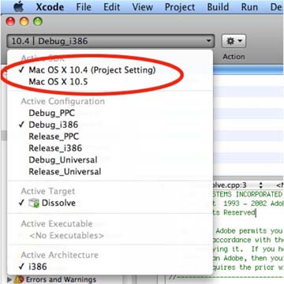

|
|
Adobe Photoshop SDK |
|
Making a 64 bit Macintosh plug-in for PhotoshopThis page describes the process for creating a 64 bit Macintosh plug-in for Photoshop.Here is a list of the items needed to build and test a 64 bit Macintosh plug-in. This documentation will focus on updating the Dissolve filter example for 64 bit. All projects in the SDK have a 64 bit output option. Refer to the specific plug-in type for more information.
See BuildInfo for information about versions of build tools used to make Photoshop and the SDK examples. The screen shots below are from older versions and may not be applicable with the latest tool installers or development environments. These were taken when the original conversion occured for 64 bit projects. Step 1: Find portability issuesThe majority of the problems you will deal with when converting from 32 bit to 64 bit are assumptions made about the size of a pointer. There is a lot of code that puts a pointer ( 4 or 8 bytes ) into an int or long ( 4 bytes only ). As you can see, that will no longer work in the 64 bit environment. The second biggest problem is using the wrong type when getting the size of information. The new operator and many size operators return a size_t type ( 4 or 8 bytes ) and are assigned to int ( 4 byte ) values or long ( 4 or 8 bytes).
Step 2: Switch to the 10.7 SDK from AppleIt is recommended to use the 10.7 SDK from Apple. Switch to the 10.7 SDK by clicking on your Plug-in in the Project Navigator section of your project. Select the "plugin" under the PROJECT header in the next column. Then select the "Build Settings" tab. Make sure that "OS X 10.7" is selected in the Base SDK section. "Apple LLVM compiler 4.2" is selected in the "Compiler for C/C++/Objective-C" section. And that "OS X 10.6" is selected in the "OS X Deployment Target." The screen shot below shows the settings for the simpleformat example plugin.

Step 3: Fix entry point and PiPLThe main entry point to the plug-in needs to be changed.
// -------------------------------------- // The old entrypoint // -------------------------------------- DLLExport MACPASCAL void PluginMain( const int16 selector, void * filterRecord, int32 * data, int16 * result) // -------------------------------------- // Thew new entrypoint // using the dynamic type intptr_t // -------------------------------------- DLLExport MACPASCAL void PluginMain( const int16 selector, void * filterRecord, intptr_t * data, int16 * result) The PiPL property needs a 64 bit selector. Here is the recommended PiPL properties for all platforms:
#ifdef __PIMac__ #if (defined(__x86_64__)) CodeMacIntel64 { "PluginMain" }, #endif #else #if defined(_WIN64) CodeWin64X86 { "PluginMain" }, #else CodeWin32X86 { "PluginMain" }, #endif #endif Step 4: TestAdobe Photoshop CC installs as a x86_64 binary.Other IssuesOnly the Dissolve example has been converted to a Cocoa UI and all the projects noted above. All of the other examples have had their UI removed on the 64 bit Macintosh Platform. Use the Dissolve example to see how to hook up a UI on 64 bit Macintosh to a plug-in. All of the other plug-ins are x86_64.Online InformationWatch out for Objective-C naming conflicts. Please use a unique id for all of your Objective-C code names as described here. See this for more information: Preventing Name ConflictsFinding the Version info in XcodeFrom the Xcode menu select About Xcode |